27. November bis 6. Dezember 2026 · Seoul · Daegu · Kitakyushu · Tokio
Offene Punkte
Haken bleiben im Browser gespeichert.
Erledigt: Online-Fragebogen am 14.10.2026 abgeschickt (Flüge, Hotels, Einzelzimmer mit Frühstück) · Hotel-Rückmeldung an den AC damit erledigt, alle drei Delegationshotels reserviert, Zahlung vor Ort · Zusatznächte Seoul und Tokio durch die AC-Buchung abgedeckt · Firmenwortlaut am 11.09. an Barbara gesendet.
Zug, 2:48 Stunden, zwei Umstiege: IR 610 bis Wörgl, RJ 286 bis München Ost, S 8 zum Terminal. Alternative Auto: Abfahrt 13:30, rund 1:30 Stunden.
13:15
Flughafen MünchenTerminal 2
Zeitplan
Alles in einer Linie: Flüge, Transfers mit Karte, Firmentermine, optionale Programme, Foto-Motive und Auftrittschancen. Zeiten in Ortszeit, Korea und Japan liegen auf MEZ plus 8.
fix · AWO vom AußenwirtschaftsCenter organisiert
selbst Flüge und Anreise auf eigene Rechnung
Transfer Weg zwischen zwei Punkten
optional Vorschlag, noch nicht entschieden
Foto-Motiv Aufnahme für deine Vorträge
?Auftritt Bühne noch nicht fix, Anfrage offen
Jetlag Licht, Schlaf und Melatonin gegen die acht Stunden
Fr 27.11.2026Anreise · St. Johann, München, Nachtflug
ab Di 24.11.
JetlagVorlauf daheim: jeden Tag eine Stunde früher
Du stehst ohnehin um 05:00 auf. Drei Abende vor dem Flug je eine Stunde früher ins Bett und früher auf — Di 24.11. Wecker 04:00, Mi 25.11. 03:30, Do 26.11. 03:00 — morgens sofort helles Licht, abends ab 19:00 gedämpft. Damit nimmst du zwei bis drei der acht Stunden vorweg.
AnsatzDer wirksamste Hebel überhaupt — stärker als alles, was an Bord passiert.
bis 09:45
selbstLetzte Termine in St. Johann
Danach zum Bahnhof. Mit dem Auto wäre die Abfahrt erst um 13:30 nötig (rund 1:30 Stunden bis Franz Josef Strauß), mit dem Zug geht es früher los, dafür kannst du unterwegs arbeiten und sparst das Parken.
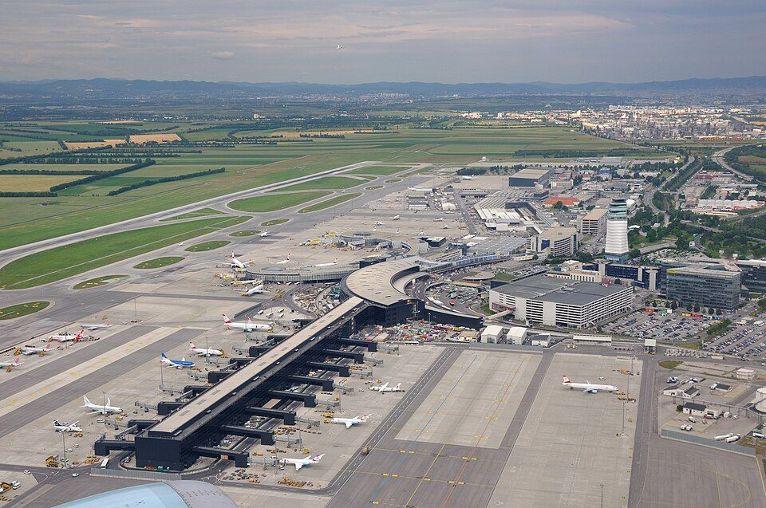
Abflug ab München statt Wien
10:2713:152:48 h
TransferZug St. Johann → Flughafen München
IR 610 ab 10:27 bis Wörgl, RJ 286 bis München Ost, S 8 bis zum Terminal. 2:48 Stunden, zwei Umstiege, Ankunft 13:15 — knapp drei Stunden vor dem Abflug.
AnsatzAlternative Auto: Abfahrt 13:30, rund 1:30 Stunden. Der Zug kostet eine Stunde mehr, dafür arbeitest du statt zu fahren.
0:50 h
0:50 h frei zwischen 13:15 und 14:05
14:0515:051:00 h
Check-inGepäckabgabe LH 718 und Kontrollen
München Terminal 2. Zwei Stunden vor Abflug am Terminal sein, der Bag-Drop schließt um 15:05, also 60 Minuten vor Abflug. Danach Sicherheitskontrolle und Passkontrolle Richtung Non-Schengen.
AnsatzDer Zug kommt 13:15 an — 50 Minuten Reserve bis zur empfohlenen Terminalzeit.
15:2015:45
BoardingBoarding LH 718
Boarding beginnt 45 Minuten vor Abflug um 15:20, das Gate schließt 15:45, 20 Minuten vor Abflug. Gate-Nummer erst am Abflugtag in der App.
AnsatzBusiness-Boarding läuft über die eigene Schlange, du kannst also bis 15:30 warten.
16:0511:15+1Landung 03:15 Wien19:10 h
selbstLH718 München (MUC) → Seoul-Incheon (ICN) · Business
Nachtflug, 11:10 Stunden, nonstop. Ankunft Samstag 11:15 Ortszeit, in Wien ist es dann 03:15. Gebucht am 11.09. als Teil der Kombi mit dem Rückflug, zusammen 2.227,24 Euro.
AnsatzBusiness genau dort, wo du schläfst. Nicht stornierbar, Umbuchung 300 Euro.
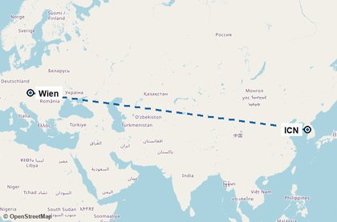
Route nach Seoul
an Bord
JetlagUhr auf Seoul stellen, schlafen, kein Alkohol
Nach dem ersten Service schlafen, Augenmaske und Ohrstöpsel. Kein Alkohol, er zerschlägt den Tiefschlaf. Die letzten drei Stunden vor der Landung wach bleiben und hell machen.
AnsatzBusiness heißt hier: sechs bis sieben Stunden echter Schlaf statt Dösen.
Sa 28.11.2026Seoul · Zusatztag, selbst finanziert
bis 11:00
JetlagVormittags Licht meiden — die Lichtregel ist an Tag 1 umgekehrt
Weil du um 05:00 aufstehst, liegt dein Körpertief bei etwa 03:00 Wiener Zeit, in Seoul also gegen 11:00. Licht davor dreht die innere Uhr in die falsche Richtung: Sonnenbrille vom Flughafen bis in die Stadt, ab 11:00 bewusst ins Tageslicht.
AnsatzDie Grenze rückt täglich rund eine Stunde vor: Sonntag ab 10:00, Montag ab 09:00, danach normal.
11:1503:15 Wien
selbstAnkunft Incheon (ICN)
Kein Transfer des Veranstalters. Kein Visum und keine K-ETA nötig — Österreich ist bis 90 Tage visumfrei und von der K-ETA bis 31.12.2026 befreit. Pflicht ist nur die e-Arrival Card, online innerhalb der drei Tage vor der Einreise. Drei Stunden früher als in der alten Variante.
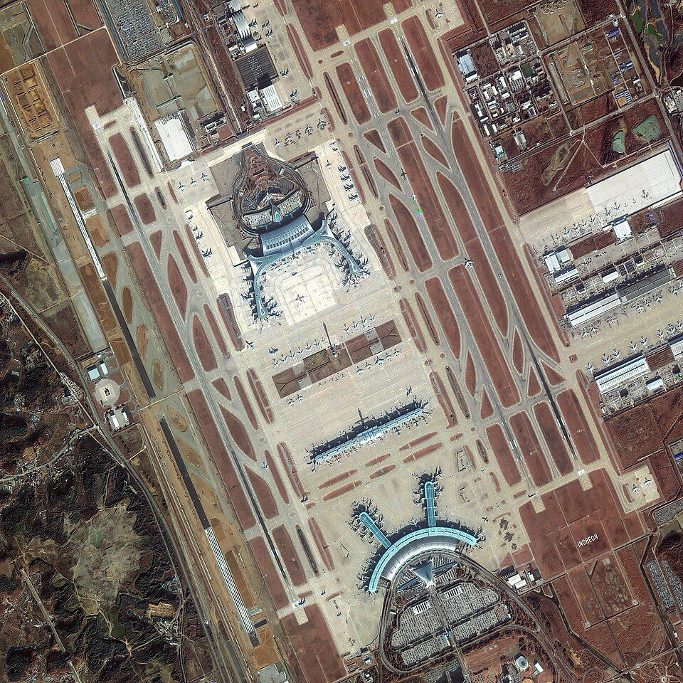
Incheon International
12:0013:001:00 h
TransferIncheon → Seoul Innenstadt
AREX-Express 43 Minuten bis Seoul Station, Taxi rund 60 Minuten.
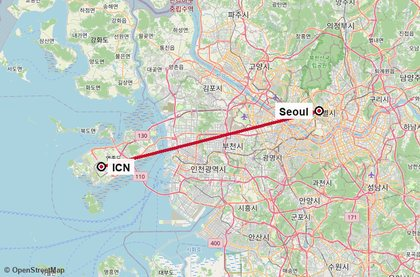
Flughafen in die Stadt
1:00 h
1:00 h frei zwischen 13:00 und 14:00
ab 14:00
optionalBukchon Hanok Village und Insadong
Traditionelles Viertel zwischen den Palästen, wenige Minuten vom AußenwirtschaftsCenter am Jongno.
Steht als Tipp im offiziellen Programm. Kassenloser Ablauf, 30 Sekunden Video reichen.
AnsatzDein Bild für „Automatisierung ist längst im Alltag“. Direkt neben 600 Jahre alten Hofhäusern — stärkster Kontrast der Reise.
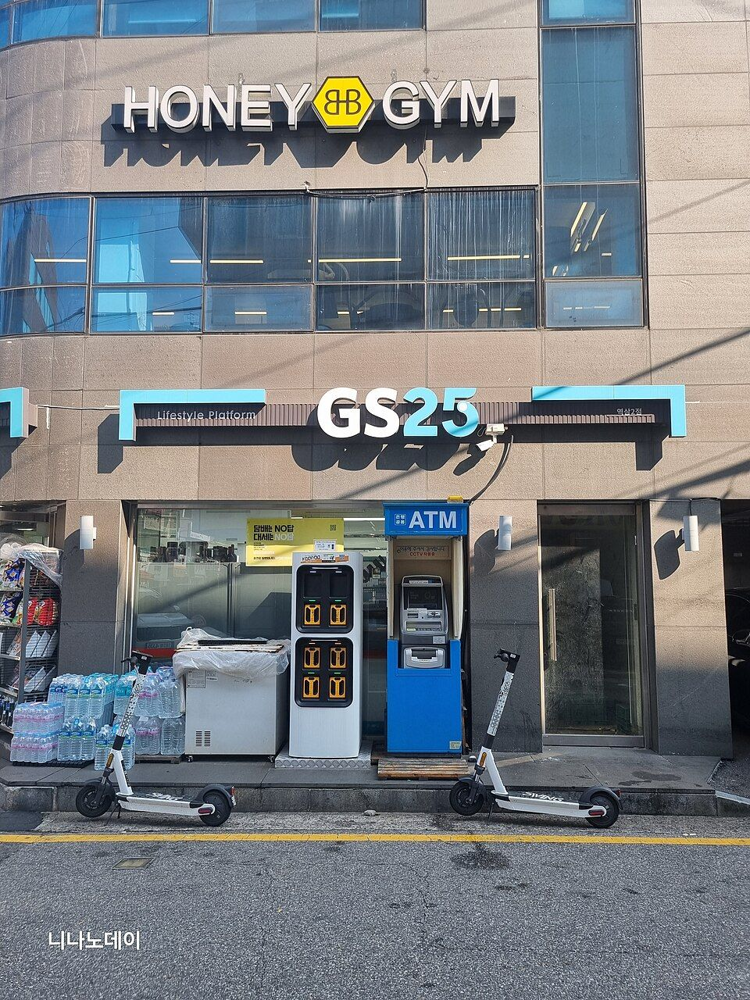
GS25, automatisierte Filiale
6:30 h
6:30 h frei zwischen 15:00 und 21:30
21:30
JetlagMelatonin 0,5–1 mg, Zimmer abdunkeln
Schnell freisetzend, zur lokalen Schlafenszeit, höchstens fünf Nächte. Dosis einmal daheim testen. Mehr als 1 mg bringt nichts — höhere Dosen wirken nicht besser.
AnsatzSpätestens 23:00 Licht aus. Jede Stunde Schlaf hier spart dir am Montag im Bus zwei.
abends
optionalGwangjang-Markt oder Jjimjilbang
Garküchen mit Bindaetteok und Gimbap, oder koreanisches Badehaus gegen die acht Stunden Zeitverschiebung.
AnsatzIm Jjimjilbang gilt Filmverbot. Als Anekdote trotzdem gut.
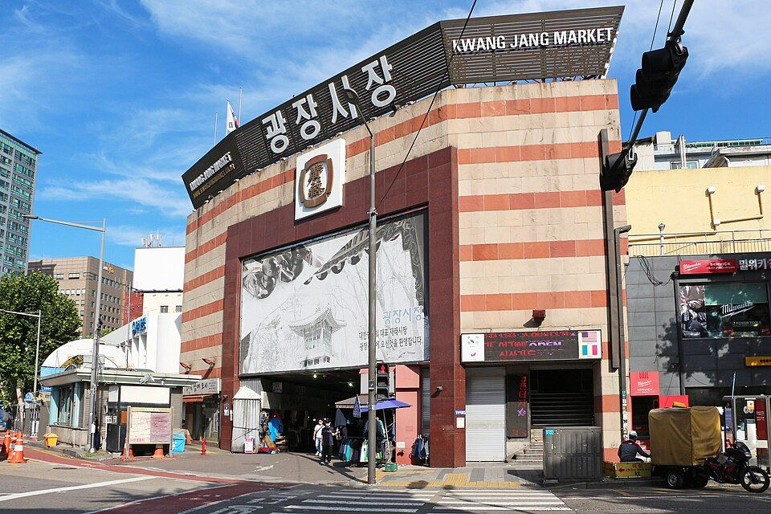
Gwangjang-Markt
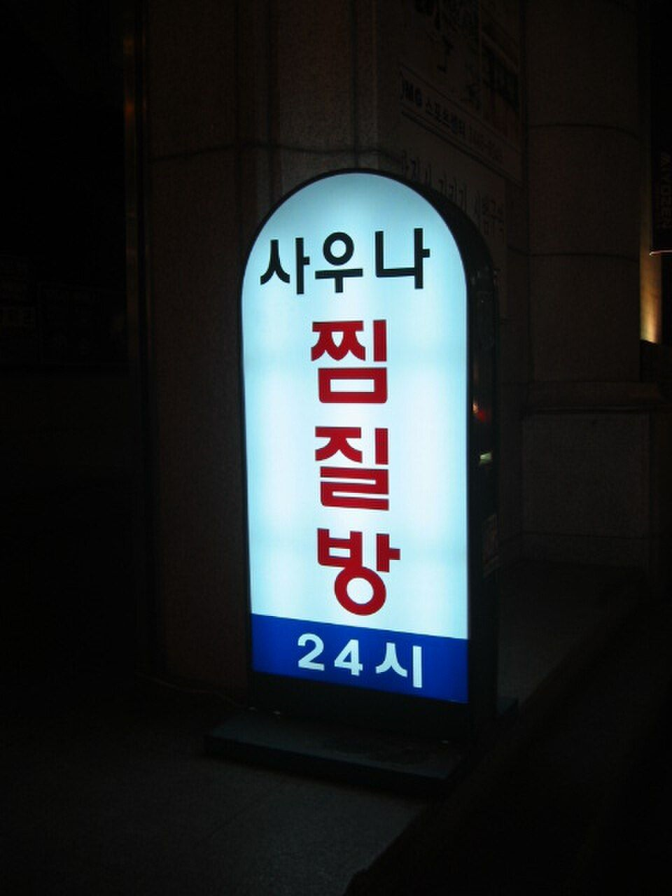
Jjimjilbang
So 29.11.2026Seoul · Programmstart am Abend
ab 10:00
JetlagTageslicht tanken, Koffein nur bis mittags
Ab 10:00 wirkt Licht in die richtige Richtung — mindestens eine Stunde draußen, am besten zu Fuß. Letzter Kaffee 12:00 Ortszeit, sonst schiebt er den Abend wieder zurück.
AnsatzMittagsschlaf höchstens 20 Minuten und nie nach 15:00.
vormittags
optionalGyeongbokgung, Wachablöse stündlich
Hauptpalast der Joseon-Dynastie. Dienstags geschlossen, sonntags offen.
AnsatzB-Roll für den Gegenschnitt zu den Humanoiden am Montag.
fix · AWOAbendessen und Briefing, Wirtschaftsdelegierter Wolfgang Köstinger
Programmvorstellung bei koreanischem Abendessen, Ort noch offen.
AnsatzErste Gelegenheit, Fotofreigaben für die Werksbesuche anzusprechen.
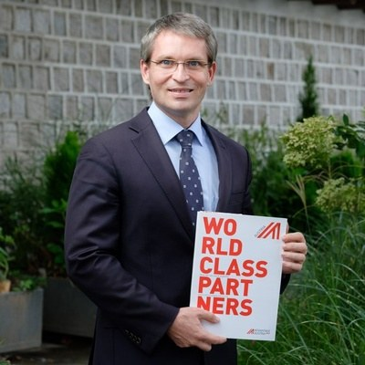
Wolfgang Köstinger, Wirtschaftsdelegierter Seoul
Mo 30.11.2026Daegu · Hyundai Robotics und KIRIA
08:3011:002:30 h
TransferSeoul → Daegu
Bus des Veranstalters, rund 240 Kilometer, zweieinhalb Stunden.
Ansatz08:30 Ortszeit sind 00:30 in Wien. Erster harter Tag, Schlaf am Vortag einplanen.
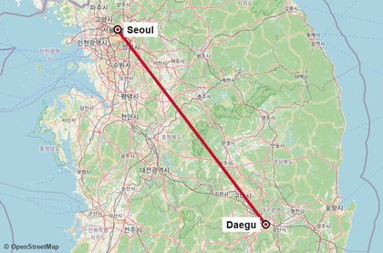
Seoul – Daegu, 240 km
11:0012:301:30 h
fix · AWOHD Hyundai Robotics Showroom
Koreas größter Industrieroboterbauer, aus dem Schiffbaukonzern HD Hyundai. Schweiß-, Handling- und Palettierroboter. Im Showroom laufen Live-Zellen. Ort laut Programm: 50, Techno sunhwan-ro 3-gil, Yuga eup, Dalseong-gun, Daegu.
AnsatzHD Hyundai ist nicht Hyundai Motor Group, der Boston Dynamics gehört. Verwandtschaft klären, bevor du es auf der Bühne verwechselst.
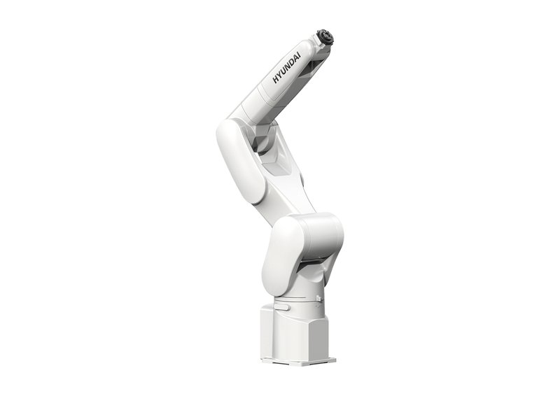
HD Hyundai HH7 · Herstellerbild
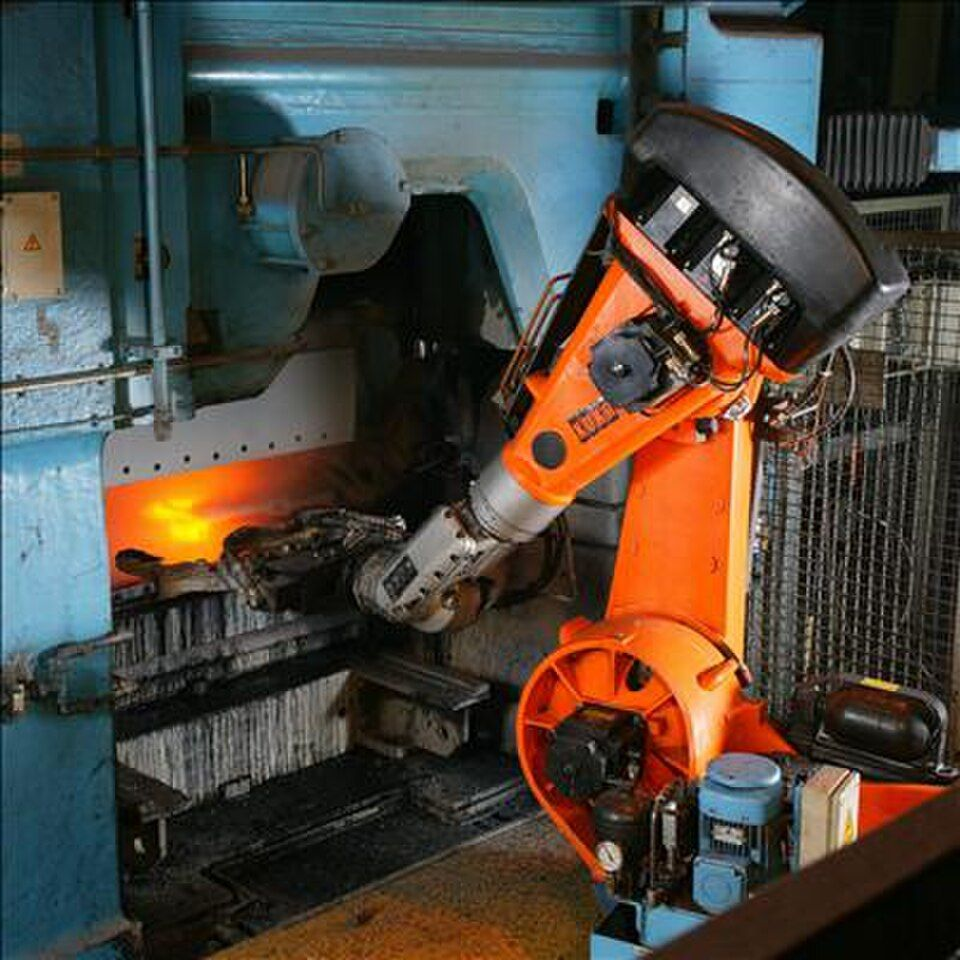
Fertigungszelle
12:3013:301:00 h
fix · AWOHumanoid Robot Hub und R&D Center
Junge Einheit für humanoide Plattformen. Prototypen statt Serie, Entwickler reden offener als jede PR-Abteilung.
AnsatzFoto-Motiv „humanoider Roboter ohne Zweck“ — Kernbild deiner Kampagne. Freigabe vorab über den Wirtschaftsdelegierten erbitten.
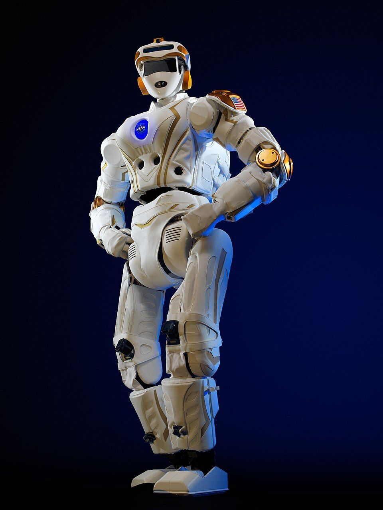
humanoide Forschungsplattform
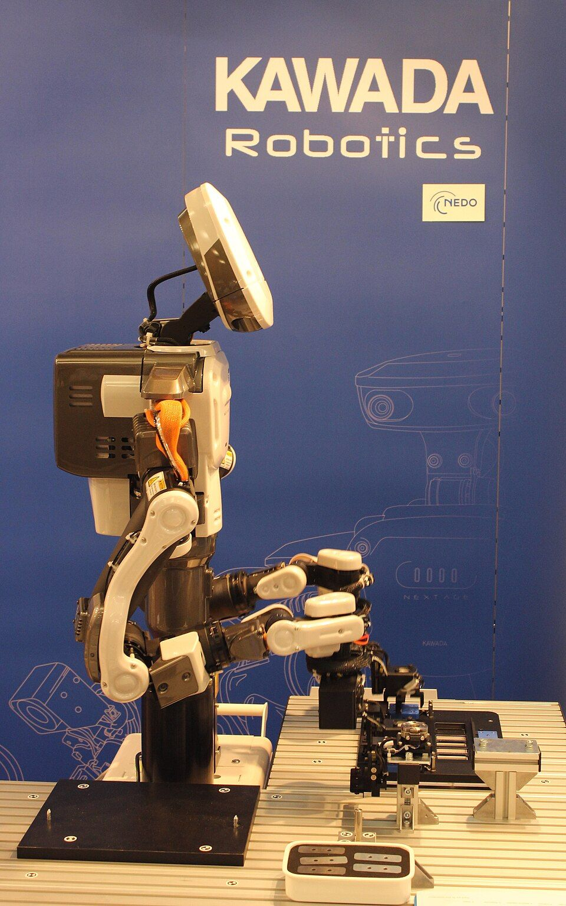
zweiarmiger Montageroboter · Herstellerbild
13:3014:301:00 h
fix · AWOMittagessen in Daegu
Ort noch offen.
15:0017:002:00 h
fix · AWOKorea Institute of Robot Industry Advancement
Staatliche Agentur: Förderung, Zertifizierung, Marktzahlen. Korea hat die höchste Roboterdichte der Welt, rund tausend Roboter je 10.000 Beschäftigte. Ort laut Programm: 77 Nowon-ro, Buk-gu, Daegu.
AnsatzSeit 2023 betreibt KIRIA eine Online-Plattform für Robotik-Technologiesupport. Frag, wie viele Firmen sie nutzen und was dort am häufigsten gesucht wird — das ist eine Zahl, die sonst niemand auf der Bühne hat. Adresse: 77 Nowon-ro, Buk-gu.
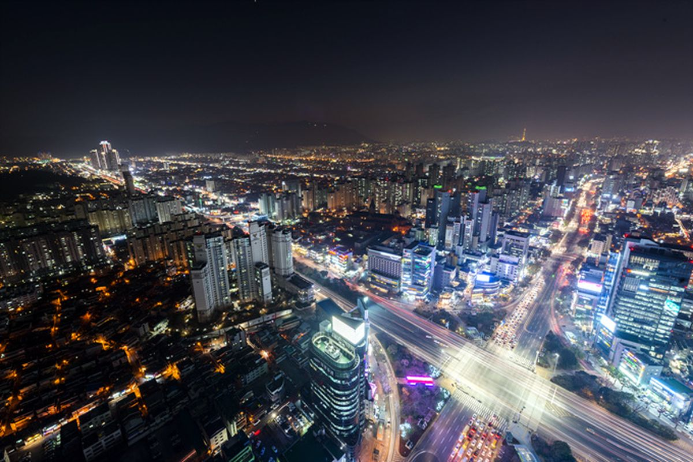
Daegu, Sitz der Agentur
17:0019:302:30 h
TransferDaegu → Seoul
Rückfahrt mit dem Bus, Abend zur freien Verfügung.
Rückweg nach Seoul
Di 01.12.2026Seoul · Cobots, Verband, ABC-Empfang
09:0010:001:00 h
TransferSeoul → Pangyo, Seongnam
Techno Valley südlich von Seoul, rund 40 Minuten.
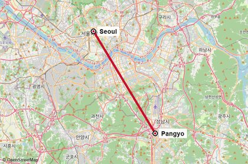
Seoul – Pangyo
10:0012:002:00 h
fix · AWODoosan Robotics und Hanwha Robotics · im Programm als TBC
Doosan: Cobot-Serien M, A, H, E, seit dem Börsengang 2023 stark im Service, inklusive Barista- und Frittier-Robotern. Hanwha: HCR-Cobots plus AGV und AMR, 2023 ausgegliedert. Orte laut Programm: Doosan 155 Jeongjail-ro, Hanwha 323 Pangyo-ro, beide Bundang-gu, Seongnam-si.
AnsatzCobots in Gastronomie und Service sind Fachkräftemangel zum Anfassen, nicht Fabrikromantik.
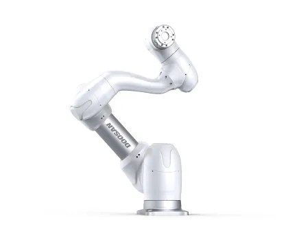
Doosan M-Serie · Herstellerbild
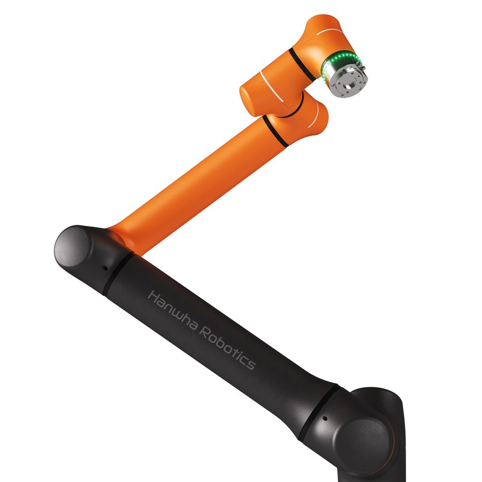
Hanwha HCR-14 · Herstellerbild
1:00 h
1:00 h frei zwischen 12:00 und 13:00
13:0014:001:00 h
fix · AWOMittagessen
Ort noch offen.
14:0015:001:00 h
fix · AWOKorea Association of Robot Industry
Branchenverband, verbindet Regierung, Industrie und Forschung. Ort laut Programm: 31 Hangang-daero, Yongsan District, Seoul.
AnsatzMarktdaten und Kontakte, kaum Bilder. Für Social Media der schwächste Punkt.
15:0016:001:00 h
Foto-MotivDemografie zum Anfassen
Freie Stunde im Programm. Seoul-U-Bahn, Hundesalons in Gangnam, leere Schulhöfe.
AnsatzBisher zeigst du nur die Fertilitätsrate auf der Folie. Ein Bild sagt hier mehr.
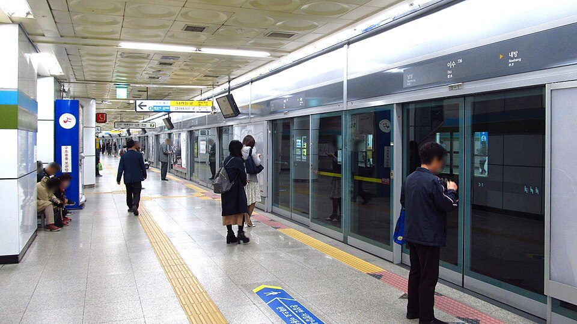
Seoul, U-Bahn-Station Isu
2:00 h
2:00 h frei zwischen 16:00 und 18:00
18:0021:003:00 h
fix · AWOAbendempfang mit der Austrian Business Community
Österreichische Community in Seoul, organisiert vom AußenwirtschaftsCenter. Teil des Programms.
AnsatzHier entstehen Kontakte, nicht auf dem Werksgelände.
Wolfgang Köstinger, Wirtschaftsdelegierter Seoul
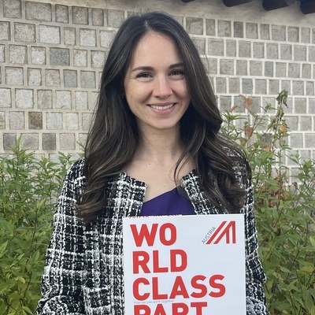
Emma Obenaus, Stellvertreterin
dort
?AuftrittKurzimpuls beim Empfang anfragen
Zehn Minuten zur Robotik-Reise aus österreichischer Sicht.
AnsatzEntscheider ist Köstinger. Anfrage jetzt, Ablauf wird Wochen vorher fixiert.
Mi 02.12.2026Seoul nach Kitakyushu · Yaskawa
08:0010:002:00 h
TransferSeoul → Incheon (ICN)
Check-out, Treffpunkt Hotellobby, Transfer des Veranstalters zum Flughafen.
Seoul – Incheon
08:5009:501:00 h
Check-inCheck-in KE 791, Incheon
Internationales Terminal. Zwei Stunden vorher dort sein, der Check-in schließt 09:50, 60 Minuten vor Abflug. Danach Ausreise- und Sicherheitskontrolle.
AnsatzDer Bustransfer des Veranstalters ist auf den Pflichtflug abgestimmt — Check-out und Abfahrtszeit an der Hotellobby bestätigen lassen.
10:1010:30
BoardingBoarding KE 791
Boarding ab 10:10, das Gate schließt 10:30, 20 Minuten vor Abflug.
Alle Transfers in Japan hängen an diesem Flug. Gebucht am 11.09. über Barbara, 196,27 Euro, nicht stornierbar.
AnsatzAndere Verbindungen sind nicht möglich, ohne das Ankunftsprogramm zu verlieren.
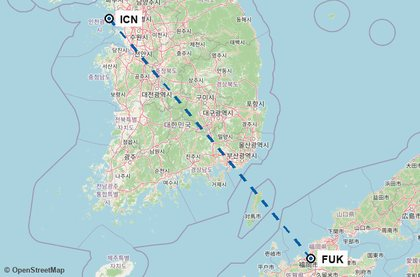
Incheon – Fukuoka
13:0013:30
TransferFukuoka (FUK) → Kitakyushu
Abholung durch den Veranstalter, rund 70 Kilometer.
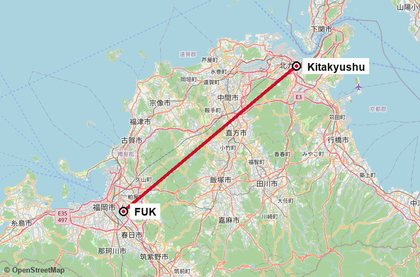
Fukuoka – Kitakyushu
13:3014:301:00 h
fix · AWOMittagessen und Briefing zum Japan-Programm
1:00 h
1:00 h frei zwischen 14:30 und 15:30
15:3017:001:30 h
fix · AWOYaskawa Technology Center
Motoman-Industrieroboter, Servoantriebe, Umrichter. Yaskawa prägte 1969 den Begriff Mechatronik. Bustransfer laut Programm 14:30–15:30. Ort: 2-1 Kurosakishiroishi, Yahatanishi-ku, Kitakyushu 806-0004.
AnsatzYaskawa baut auch Assistenz- und Rehatechnik. Nach dem tragbaren Exoskelett fragen — das Motiv fehlt dir im Pflege-Vortrag.
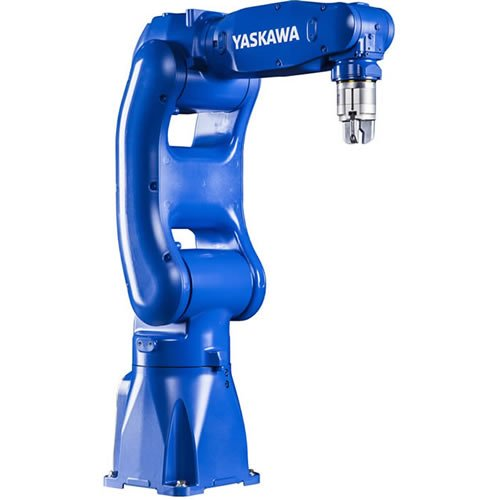
Motoman GP8 · Herstellerbild
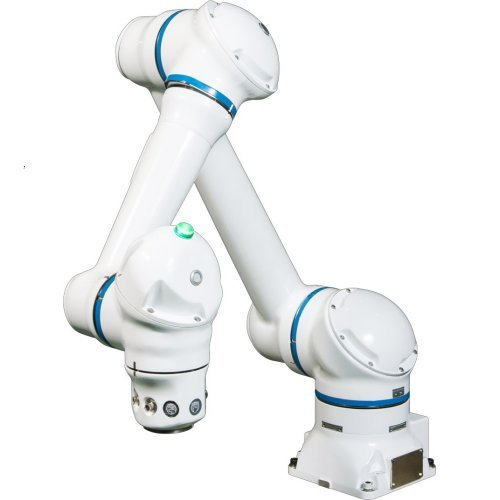
Motoman HC10 Cobot · Herstellerbild
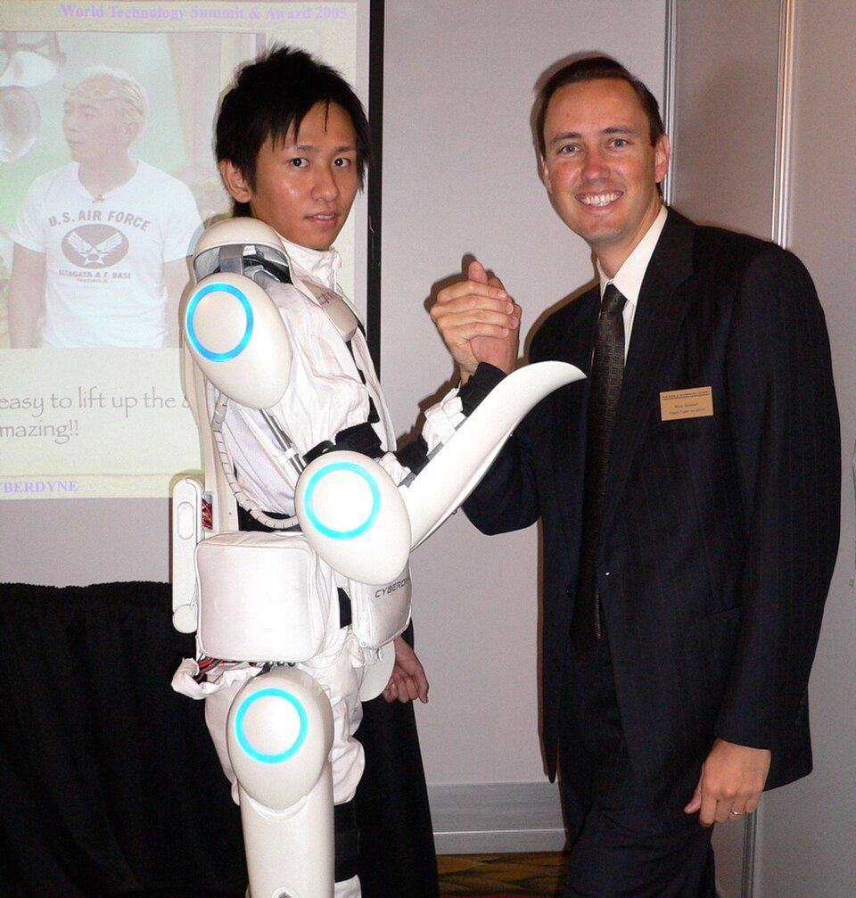
Exoskelett, Motiv für den Pflege-Vortrag
17:30
fix · AWOCheck-in Chigusa Hotel
Bustransfer 17:00–17:30, Check-in und freie Zeit bis 18:30. Ort: 1-1-1 Nishihommachi, Yahatahigashi-ku, Kitakyushu.
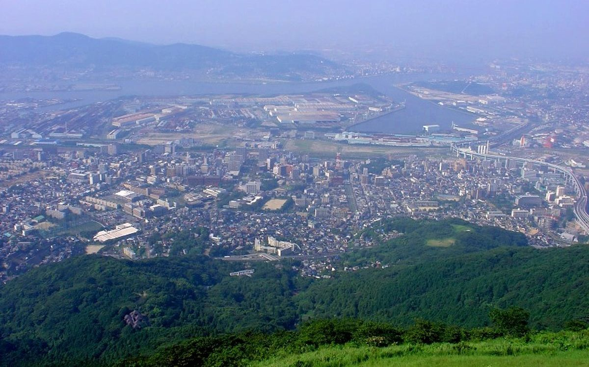
Kitakyushu
1:00 h
1:00 h frei zwischen 17:30 und 18:30
18:3020:001:30 h
fix · AWONetzwerkempfang im Hotel
ab 20:00
optionalKokura Castle oder TOTO-Museum
Burg im Zentrum, 15 Minuten vom Hotel. Das TOTO-Museum zeigt Industriegeschichte der Sanitärtechnik.
AnsatzDas TOTO-Museum ist der unerwartete Erzählstoff: skurril und trotzdem seriös.
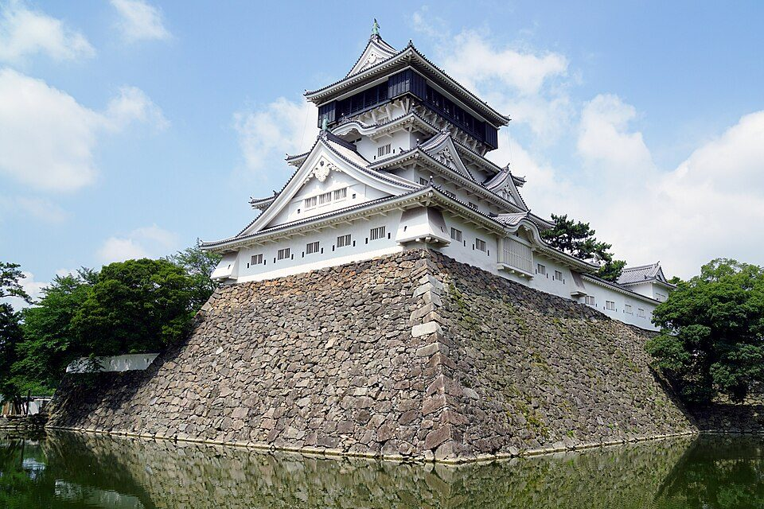
Kokura Castle
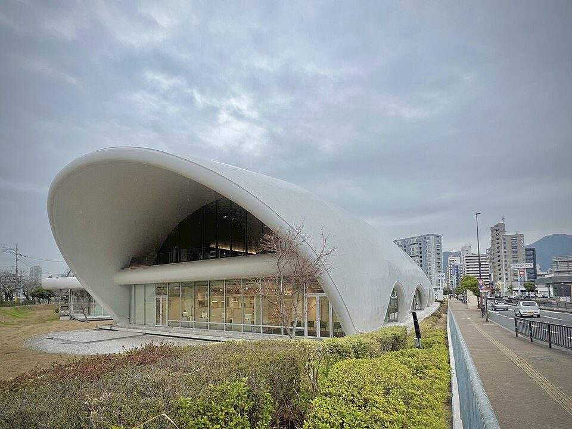
TOTO-Museum
Do 03.12.2026Kitakyushu nach Tokio · Denso, Xela
08:30
fix · AWOCheck-out Chigusa Hotel
09:0011:002:00 h
fix · AWOFirmenbesuch Denso · Ort im Programm TBD
Weltgrößter Kfz-Zulieferer, Toyota-Gruppe, Mikro-Montage-Robotik. Denso Wave erfand 1994 den QR-Code und gab ihn frei. Bustransfer 08:30–09:00, Ort im Programm als TBD.
AnsatzFertige Anekdote: eine Technologie veränderte die Welt, weil sie verschenkt wurde.
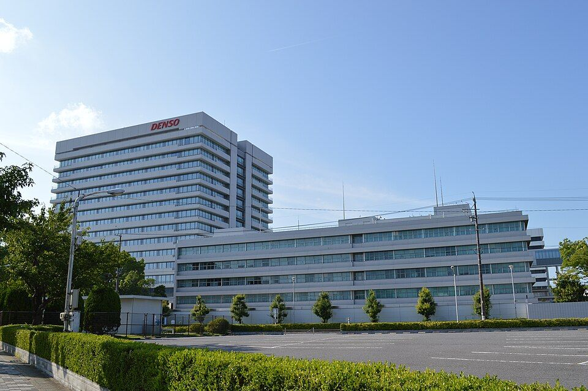
Denso, Kariya
11:0012:001:00 h
TransferKitakyushu → Flughafen KKJ
Bustransfer 11:00–12:00, danach Mittagessen am Flughafen 12:00–13:00 auf Selbstzahlerbasis.
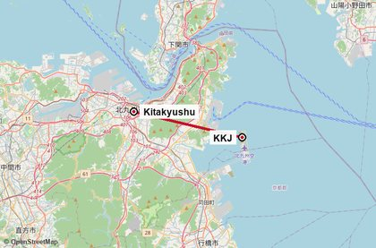
Kitakyushu – KKJ
0:50 h
0:50 h frei zwischen 12:00 und 12:50
12:5013:30
Check-inGepäckannahme SFJ 082, Kitakyushu
Check-in im 2. Stock. Die Gepäckannahme schließt 13:30, 20 Minuten vor Abflug — bei japanischen Inlandsflügen gelten kürzere Fristen als international.
AnsatzDer Veranstalter-Transfer ist um 12:00 am Flughafen, Mittagessen am KKJ ist eingeplant.
13:3013:40
BoardingBoarding SFJ 082
Boarding ab 13:30, das Gate schließt 13:40, zehn Minuten vor Abflug.
Gebucht am 11.09. direkt bei Star Flyer. Tarif Sora Tabi, 12.340 JPY, Sitz 22C, Buchungsnummer EMSZHA, Ticket 2052526499040.
AnsatzCheck-in am Kitakyushu Airport im 2. Stock, Gepäckannahme schließt 20 Minuten vor Abflug. Der Veranstalter-Transfer ist um 12:00 dort.
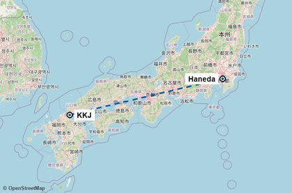
Kitakyushu – Tokio
16:0017:001:00 h
TransferHaneda → Xela Robotics
Bustransfer quer durch Tokio.
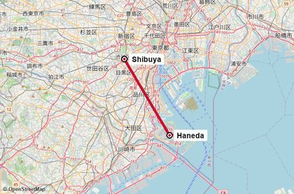
Haneda – Shibuya
17:0018:001:00 h
fix · AWOXela Robotics · im Programm als TBD
Spin-off der Waseda University, uSkin-Sensoren geben Robotern einen hochauflösenden Tastsinn. Bustransfer vom Flughafen 16:00–17:00, danach Transfer zum Hotel 18:00–19:00. Ort im Programm noch offen.
AnsatzMitgründer und CEO Alexander Schmitz ist Österreicher, CTO ist Tito Pradhono Tomo. Bester O-Ton der Reise, taktile Sensorik ist der fehlende Sinn in deinem Roboter-Narrativ.
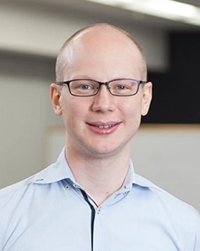
Dr. Alexander Schmitz, CEO und Mitgründer von Xela
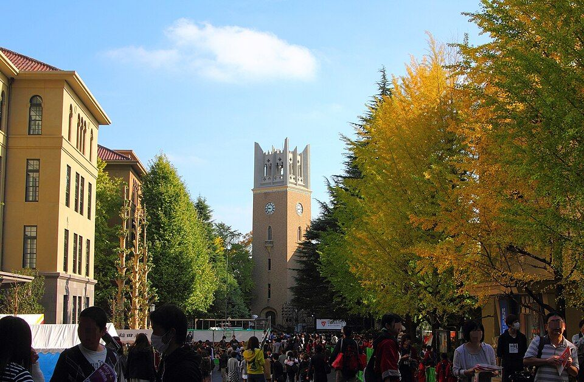
Waseda University, Ursprung von Xela
18:00
?AuftrittGastvortrag an der Waseda University anfragen
Xela ging aus Waseda hervor, Gastvorträge laufen über die Institute.
AnsatzSchmitz ist der Türöffner. Anfrage vor der Reise stellen, nicht erst vor Ort.
1:00 h
1:00 h frei zwischen 18:00 und 19:00
ab 19:00
fix · AWOCheck-in Shibuya Excel Hotel Tokyu
Ort laut Programm: 1-12-2 Dogenzaka, Shibuya, direkt an der Kreuzung.
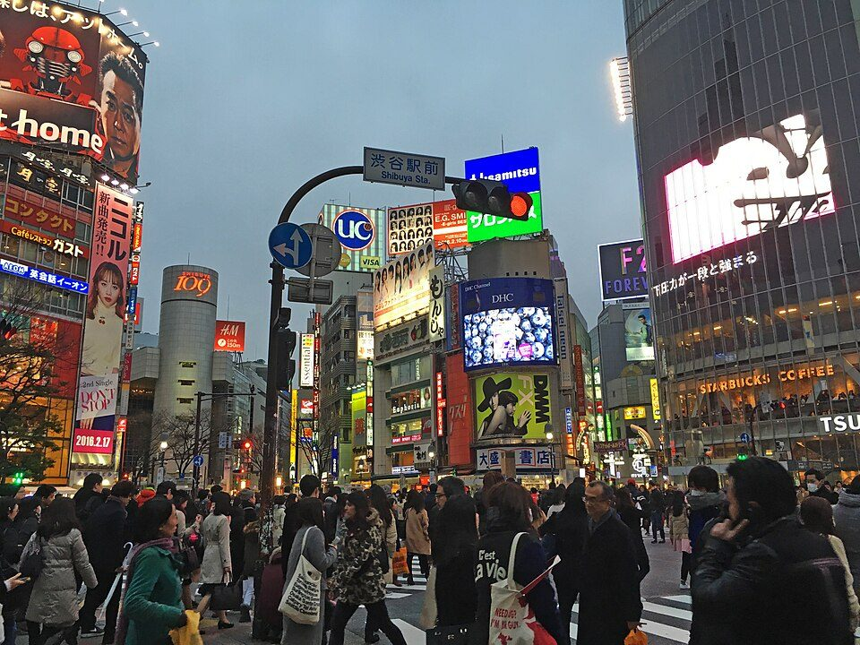
Shibuya
abends
Foto-MotivShibuya Sky
Dachplattform 230 Meter über der Kreuzung, fünf Gehminuten vom Hotel.
AnsatzSonnenuntergang gegen 16:30, abends Zeitraffer der Kreuzung. Zeitfenster vorab buchen.
Shibuya Crossing
Fr 04.12.2026Tokio · Kawada, NTT, DAWN, Kawasaki
07:3008:00
Foto-MotivOshiya, die Zugstopfer
Shinjuku oder Ikebukuro zur Rushhour. Dein meistgenutztes Japan-Beispiel in Vorlesung und Magna-Vortrag, bisher mit fremdem Bild.
AnsatzLetzte Gelegenheit der Reise. 20 Minuten, hochkant filmen.
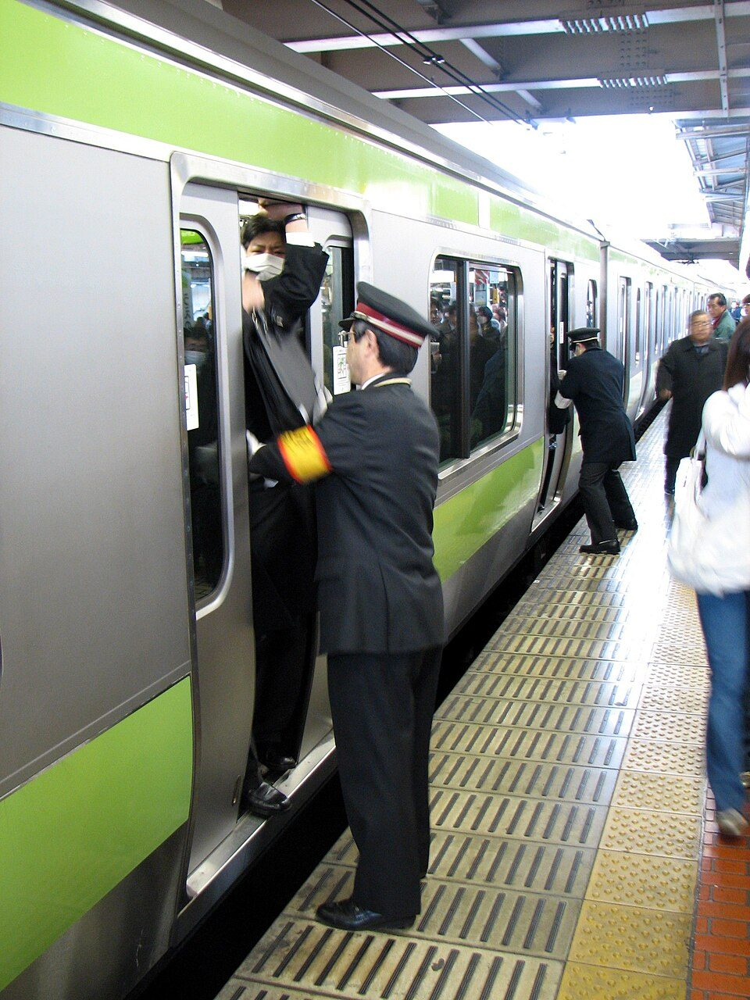
Rushhour, Zugstopfer
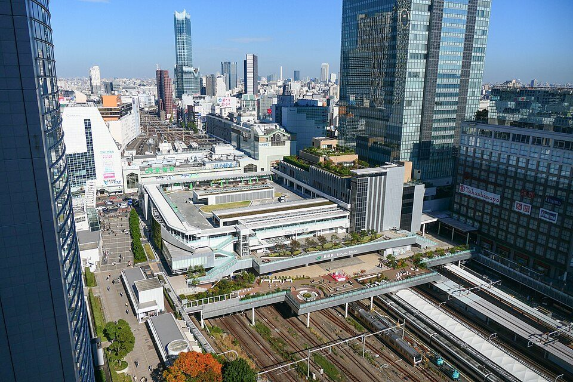
Shinjuku Station
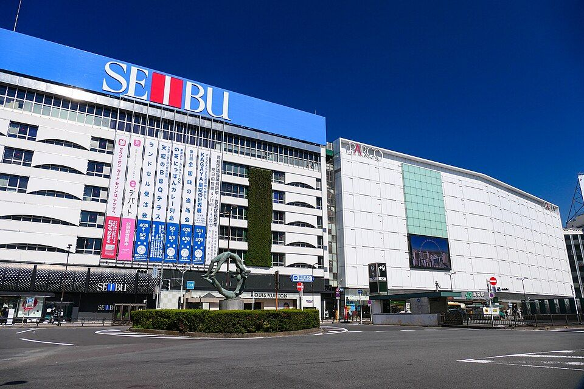
Ikebukuro Station
1:00 h
1:00 h frei zwischen 8:00 und 9:00
09:0010:301:30 h
fix · AWOKawada Robotics · im Programm als TBD
Zweiarmige humanoide Montageroboter der NEXTAGE-Serie. Mit dem Institut AIST entstanden die HRP-Plattformen. Treffpunkt Hotellobby 08:30, Bustransfer bis 09:00. Ort: JPR Ueno East Building, 7F, 1-3-5 Matsugaya, Taito-ku.
AnsatzNEXTAGE arbeitet an Werkbänken für Menschen, ohne Umbau der Halle. Das ist das eigentliche Argument für humanoide Bauform.
Vier Programmpunkte an vier Orten: Kawada in Taito, NTT Data, DAWN Café in Nihonbashi, Kawasaki in Odaiba. Dazwischen jeweils Bustransfer von 30 bis 40 Minuten.
AnsatzStart ist das Hotel in Shibuya, Ende am Abend beim Empfang. Quer durch Tokio, rechne mit wenig Leerlauf.
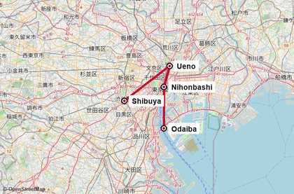
Tagesroute Shibuya, Ueno, Nihonbashi, Odaiba
11:0012:301:30 h
fix · AWONTT Data · im Programm als TBD
IT-Dienstleister, kein Roboterhersteller. Digitalisierungs- und KI-Referenzen, eventuell Smart Factory.
AnsatzBildwert gering, Netzwerkwert hoch. Gelegenheit für Fragen zur japanischen KI-Regulierung.
13:0014:001:00 h
fix · AWODAWN Avatar Robot Café · im Programm als TBD
Betrieben von Ory Laboratory. OriHime-Roboter werden aus der Ferne von Menschen mit ALS oder schwerer Behinderung gesteuert. Mittagessen auf Selbstzahlerbasis. Ort: 3-8-3 Nihonbashihoncho, Chuo City.
AnsatzInhaltlich der stärkste Punkt der Reise. Das Programm sagt zu Fotorechten nichts — in einem öffentlichen Café ist Filmen üblich, in den Werken dagegen meist untersagt. Vorab klären.
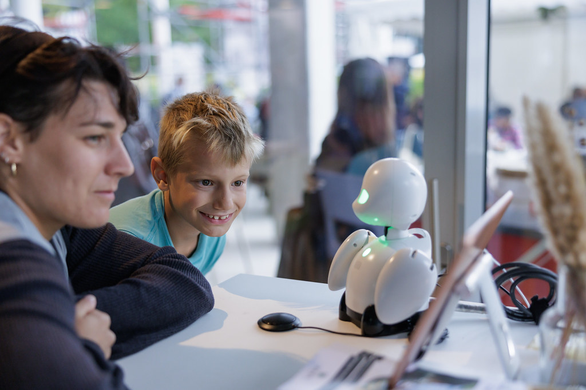
OriHime im DAWN Café · Ars Electronica, CC BY-NC-ND
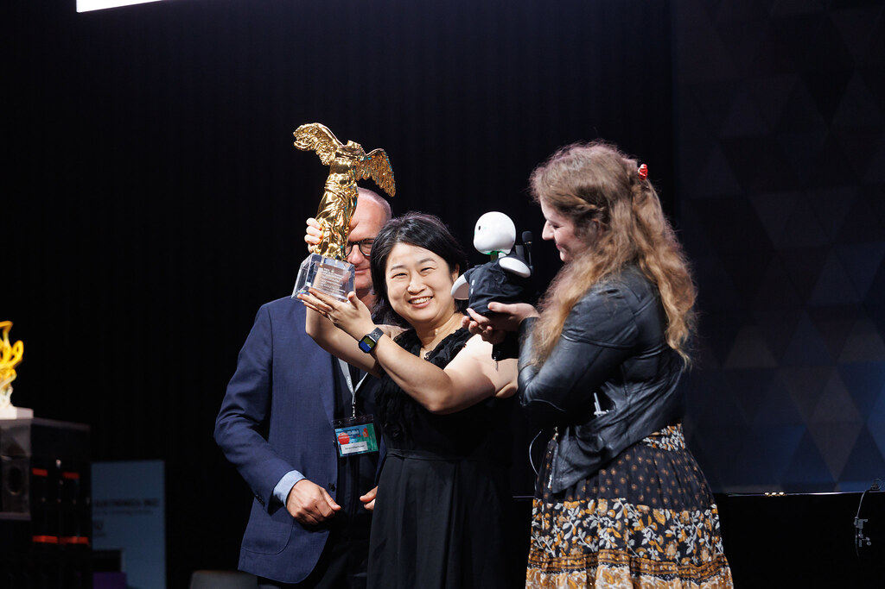
Ory Yoshifuji über einen OriHime
14:3016:001:30 h
fix · AWOKawasaki Heavy Industries, alternativ Mujin · beide TBD
Kawasaki baute 1969 den ersten japanischen Industrieroboter in Unimate-Lizenz; im Robostage stehen Kollaboration und der Humanoid Kaleido. Mujin dagegen: KI-Steuerungen ohne Teach-Programmierung. Orte: Kawasaki 1F Tradepia Odaiba, 2-3-1 Daiba, Minato-ku · Mujin 3-8-5 Tatsumi, Koto City. Im Programm überlappen Bustransfer 14:00–14:40 und Besuch ab 14:30.
AnsatzFalls die Wahl offen ist: Mujin ist die bessere Geschichte, weil dort das Programmieren selbst verschwindet.
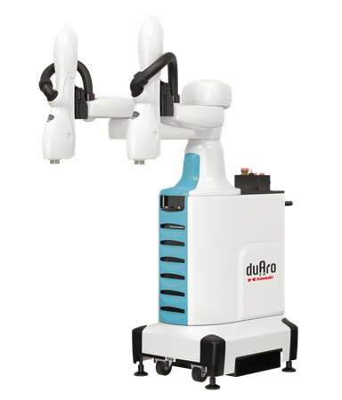
Kawasaki duAro · Herstellerbild
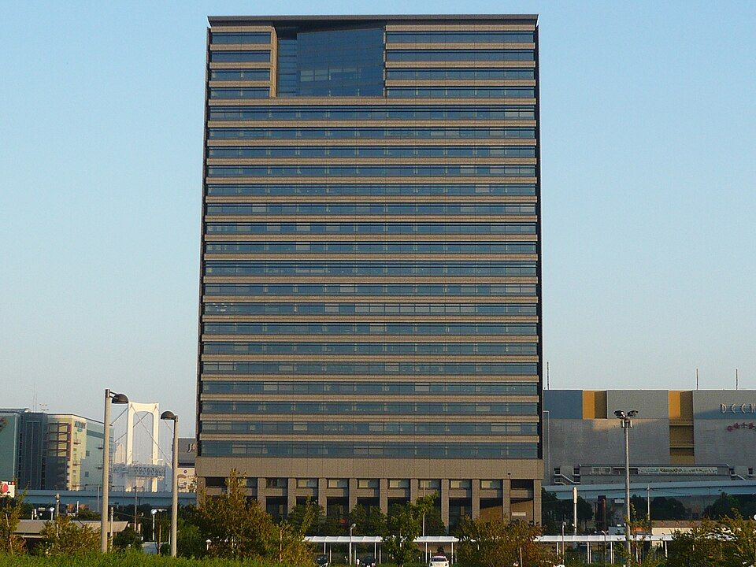
Tradepia Odaiba, Robostage
16:3017:301:00 h
fix · AWOZeit für individuelle Termine
Steht so im Programm: freies Fenster im Hotel zwischen Kawasaki und Empfang. Bustransfer zum Hotel 16:00–16:30, zum Event 17:30–18:00.
AnsatzDas einzige planbare Fenster in Tokio für ein eigenes Treffen.
18:0021:003:00 h
fix · AWOAdvent- und Year-End-Empfang, Austrian Business Council
Empfang der österreichischen Community in Tokio, letzter Programmpunkt der Reise.
AnsatzDanach kein Abflug mehr: der im Programm empfohlene Nachtflug ab Haneda existiert nicht.
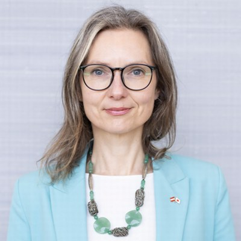
Christina Schösser, Wirtschaftsdelegierte Tokio
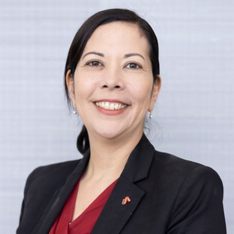
Rumi Onodera, Technologiebeauftragte
dort
?AuftrittKurzimpuls beim Empfang anfragen
Zweite Bühne, diesmal vor der Community in Tokio.
AnsatzÜber Christina Schösser anfragen, am besten gemeinsam mit der Seoul-Anfrage.
Sa 05.12.2026Tokio · voller Zusatztag
vor 08:00
optionalToyosu-Markt oder Sensō-ji
Thunfisch-Auktion ab 05:30 mit Voranmeldung, Sushi-Frühstück danach. Der Tempel ist vor acht praktisch leer.
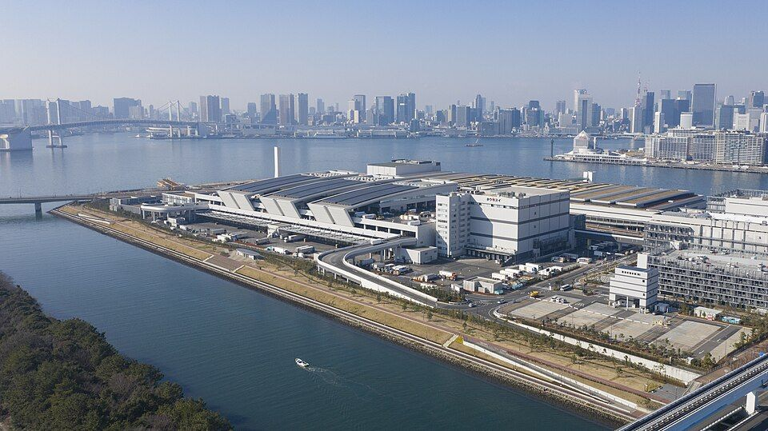
Toyosu-Markt
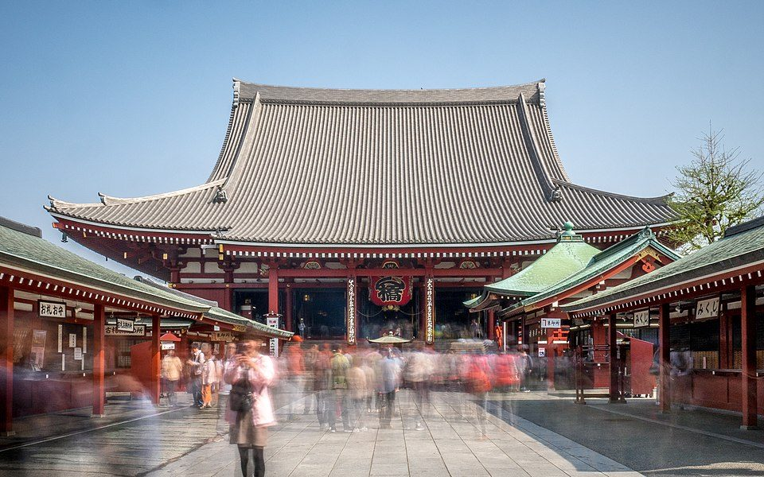
Sensō-ji
2:00 h
2:00 h frei zwischen 8:00 und 10:00
10:0013:003:00 h
optionalMiraikan, Odaiba
Museum für Zukunft und Innovation. Humanoide, Androidin Otonaroid, Assistenzrobotik.
AnsatzHier bekommst du das Bild des Demenz-Beschäftigungsroboters für den Pflege-Vortrag.
MiraikanParo, Demenz-Beschäftigungsroboter
1:00 h
1:00 h frei zwischen 13:00 und 14:00
14:0017:003:00 h
optionalteamLab Borderless oder Akihabara
Digitale Kunsträume in Azabudai Hills, Zeitfenster-Tickets oft Wochen vorher ausgebucht. Alternativ das Elektronikviertel.
AnsatzteamLab ist hochformatig gebaute Bildkraft, Akihabara liefert O-Ton und Kulisse.
Akihabara Electric Town
ganztags
optionalAlternative: Hakone oder Kamakura
Hakone: Seilbahn, Schwefelquellen, Fuji-Blick bei klarer Dezemberluft. Kamakura: Großer Buddha und Küste, eine Stunde ab Tokio.
AnsatzEntweder Stadt oder Ausflug, beides geht an einem Tag nicht.
Hakone, Fuji-BlickKamakura, Großer Buddha
abends
?AuftrittMeetup-Auftritt in Tokio
AI Tinkerers Tokyo und Tokyo AI veranstalten regelmäßig englischsprachige Abende mit Demos und Q&A.
AnsatzBeste Auftrittschance der Zusatztage. Slots werden vier bis acht Wochen vorher vergeben, also jetzt anfragen.
So 06.12.2026Heimreise · Tokio nach München
07:0008:301:30 h
TransferShibuya → Haneda (HND)
Check-out und Fahrt zum Flughafen, rund 45 Minuten plus Puffer.
Shibuya – Haneda
08:4509:451:00 h
Check-inCheck-in LH 715, Haneda
Terminal 3. Zwei Stunden vor dem internationalen Abflug dort sein, der Check-in schließt 09:45, 60 Minuten vor Abflug.
AnsatzFahrt vom Shibuya Excel rund 45 Minuten, also spätestens 08:00 losfahren.
10:0010:25
BoardingBoarding LH 715
Boarding ab 10:00, das Gate schließt 10:25, 20 Minuten vor Abflug.
10:4517:10Landung 17:10 Wien6:25 h
selbstLH715 Tokio-Haneda (HND) → München (MUC) · Economy mit Exitplatz
Tagflug, 14:25 Stunden, nonstop. Einziger Tagflug auf der Strecke. Gebucht am 11.09.
AnsatzZweiter Teil der Kombi. Am Wachbleibe-Flug sparst du, Exitplatz für die Beinfreiheit ist drin.
Rückflug nach Europa
ab 17:10
JetlagDer Rückweg ist der leichtere: wach bleiben bis 22:00
Nach Westen verlängert sich der Tag, das fällt dem Körper leichter. Am Sonntagabend trotzdem durchhalten bis 22:00 und am Montag früh raus ins Licht.
AnsatzMontag als Puffer halten, Dienstag 08:00 steht das Frühstückstreffen Kitzbühel Digital.
1:34 h
1:34 h frei zwischen 17:10 und 18:44
18:4421:322:48 h
TransferZug Flughafen München → St. Johann
S 8 ab 18:44 bis München Ost, ICE 1205 bis Wörgl, IR 615 bis St. Johann, an 21:32. 1:34 Stunden Puffer nach der Landung für Gepäck und Passkontrolle. Nächste Verbindung 19:44, an 23:08. Mit dem Auto rund 1:30 Stunden.
AnsatzMontag bleibt Puffer, Dienstag 08:00 Frühstückstreffen Kitzbühel Digital Verein.
Anhang
AußenwirtschaftsCenter Seoul
Wolfgang Köstinger, Wirtschaftsdelegierter · Emma Obenaus T +82 2 732 7330 · seoul@wko.at